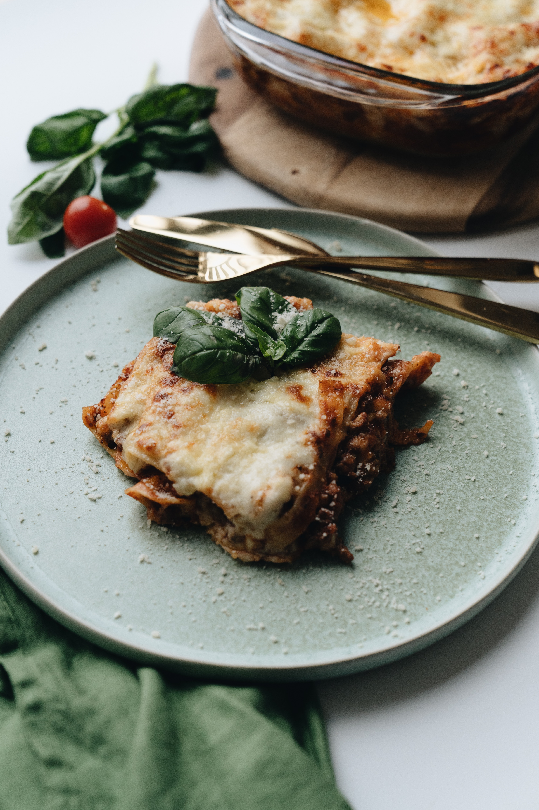

Tender sheets of pasta, a creamy ricotta cheese filling, and a rich meaty tomato sauce are all topped with more cheese and baked until browned and bubbly
- 12 lasagna noodles
- 4 cups mozzarella cheese
- 1/2 cup parmesan cheese
- 1/2 pound lean ground beaf
- 1/2 pound Italian sausage
- 1 onion
- 2 cloves garlic
- 36 ounces pasta sauce
- 2 tablespoons tomato paste
- 1 teaspoon Italian seasoning
- 2 cups ricotta cheese
- 1/4 cup fresh parsley
- 1 egg
- Preheat the oven to 350°F. In a large pot of salted water, boil lasagna noodles until al dente according to package directions. Drain, rinse under cold water, and set aside.
- In a large skillet or dutch oven, brown beef, sausage, onion, and garlic over medium-high heat until no pink remains. Drain any fat.
- Stir in the pasta sauce, tomato paste, Italian seasoning, ½ teaspoon of salt, and ¼ teaspoon of black pepper. Simmer uncovered over medium heat for 5 minutes or until thickened.
- In a separate bowl, combine 1 ½ cups mozzarella, ¼ cup parmesan cheese, ricotta, parsley, egg, and ¼ teaspoon salt.
- Spread 1 cup of the meat sauce in a 9×13 pan or casserole dish. Top it with 3 lasagna noodles. Layer with ⅓ of the ricotta cheese mixture and 1 cup of meat sauce. Repeat twice more. Finish with 3 noodles topped with remaining sauce.
- Cover with foil and bake for 45 minutes.
- Remove the foil and sprinkle with the remaining 2 ½ cups mozzarella cheese and ¼ cup parmesan cheese. Bake for an additional 15 minutes or until browned and bubbly. Broil for 2-3 minutes if desired.
- Rest for at least 15 minutes before cutting.